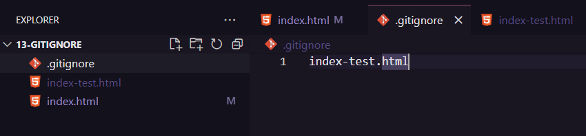

O Gitignore é um arquivo que você escreve lá os arquivos que você não quer que sejão vercionados.Isso é bom para por exemplo .log.Para cirar o argivo só escrevemos .gitignore é importete que esteja tudo com letra minuscula e o ponto no começo.
Lá você pode colocar o nome do arquivo, ou também o caminho até ele caso tem mais de um com esse nome.Para um arquivo que está na raiz e tem um com o mesmo nome escreva: "".
 Voltar